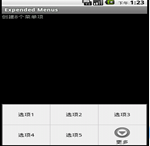
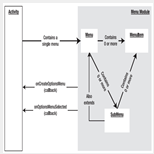

Android Menu理解与响应
理解Android的菜单
菜单是许多应用程序不可或缺的一部分，Android中更是如此，所有搭载Android系统的手机甚至都要有一个”Menu”键，由此可见菜单在Android程序中的特殊性。Android SDK提供的菜单有如下几种：
选项菜单：最常规的菜单，android中把它叫做option menu。子菜单：android中点击子菜单将弹出悬浮窗口显示子菜单项。子菜单不支持嵌套，即子菜单中不能再其他子菜单。
上下文菜单：android中长按视图控件后出现的菜单，windows点击右键弹出的菜单即上下文菜单。
图标菜单：这个比较简单，就是带icon的菜单项，需要注意的是子菜单项、上下文菜单项、扩展菜单项均无法显示图标。
选择菜单(alternative menu)：用的比较少，以后单独介绍，本文先跳过。
扩展菜单：选项菜单最多只能显示6个菜单项，超过6个时，第6个菜单项会被系统替换为一个叫“更多”的子菜单，原来显示不下的菜单项都作为“更多”菜单的子菜单项。
如下图：

android.view.Menu接口代表一个菜单，android用它来管理各种菜单项。注意我们一般不自己创建menu，因为每个Activity默认都自带了一个，我们要做的是为它加菜单项和响应菜单项的点击事件。android.view.MenuItem代表每个菜单项，android.view.SubMenu代表子菜单。其三者的关系可以用下图来表示

上面说过，每个activity包含一个菜单，一个菜单又能包含多个菜单项和多个子菜单，子菜单其实也是菜单（因为它实现了Menu接口），因此子菜单也可以包含多个菜单项。SubMenu继承了Menu的addSubMenu()方法，但调用时会抛出运行时错误。OnCreateOptionsMenu()和OnOptionsMenuSelected()是activity中提供了两个回调方法，用于创建菜单项和响应菜单项的点击。
我们看一下如何通过代码创建和响应最常用的选项菜单（options menu）。
创建options menu
之前提到，Android的activity已经为我们提前创建好了android.view.Menu对象，并提供了回调方法onCreateOptionsMenu(Menu menu)供我们初始化菜单的内容。该方法只会在选项菜单第一次显示的时候被执行，如果你需要动态改变选项菜单的内容，请使用onPrepareOptionsMenu(Menu)。
@Overridepublic boolean onCreateOptionsMenu(Menu menu) {
// 调用父类方法来加入系统菜单
// 虽然目前android还没有系统菜单，但是为了兼容到以后的版本，最好加上
super.onCreateOptionsMenu(menu);
// 添加菜单项（多种方式）
// 1.直接指定标题
menu.add("菜单项1");
// 2.通过资源指定标题
menu.add(R.string.menuitem2);
// 3.显示指定菜单项的组号、ID、排序号、标题
menu.add(1, // 组号
Menu.FIRST, // 唯一的ID号
Menu.FIRST, // 排序号
"菜单项3"); // 标题
// 如果希望显示菜单，请返回true
return true;
}
上面的代码演示了添加菜单项的3种方法，下面解释下第三种方法add(int groupId, int itemId, int order, CharSequence title)。其中，第一个参数是组号，android中你可以给菜单分组，以便快速地操作同一组的菜单。第二个参数指定每个菜单项的唯一ID号，你可以自己指定，也可以让系统来自动分配，在响应菜单时你需要通过ID号来判断哪个菜单被点击了。因此常规的做法是定义一些ID常量，但在android中有更好的方法，就是通过资源文件来引用，这个之后介绍。第三个参数代表菜单项显示顺序的编号，编号小的显示在前面。
给菜单项分组
@Overridepublic boolean onCreateOptionsMenu(Menu menu) {
super.onCreateOptionsMenu(menu);
// 添加4个菜单项，分成2组
int group1 = 1;
int gourp2 = 2;
menu.add(group1, 1, 1, "item 1");
menu.add(group1, 2, 2, "item 2");
menu.add(gourp2, 3, 3, "item 3");
menu.add(gourp2, 4, 4, "item 4");
// 显示菜单
return true;
}
你可以向上面这样给菜单项分组，分组之后就能使用menu中提供的方法对组进行操作了，如下：
menu.removeGroup(group1); //删除一组菜单menu.setGroupVisible(gourp2, visible); //设置一组菜单是否可见
menu.setGroupEnabled(gourp2, enabled); //设置一组菜单是否可点
menu.setGroupCheckable(gourp2, checkable, exclusive); //设置一组菜单的勾选情况
响应菜单项
android提供了多种响应菜单项的方式，下面一一介绍
1、通过onOptionsItemSelected方法
使用的最多方法是重写activity类的 onOptionsItemSelected(MenuItem)回调方法，每当有菜单项被点击时，android就会调用该方法，并传入被点击菜单项。
@Overridepublic boolean onOptionsItemSelected(MenuItem item) {
switch (item.getItemId()) {
// 响应每个菜单项(通过菜单项的ID)
case 1:
// do something here
break;
case 2:
// do something here
break;
case 3:
// do something here
break;
case 4:
// do something here
break;
default:
// 对没有处理的事件，交给父类来处理
return super.onOptionsItemSelected(item);
}
// 返回true表示处理完菜单项的事件，不需要将该事件继续传播下去了
return true;
}
以上代码可作为使用onOptionsItemSelected方法响应菜单的模板来使用，这里为了方便起见将菜单ID硬编码在程序里，你可以使用常量或资源ID来使代码更健壮。
2.使用监听器
虽然第一种方法是推荐使用的方法，android还是提供了类似java swing的监听器方式来响应菜单。使用监听器的方式分为两步:
//第一步：创建监听器类class MyMenuItemClickListener implements OnMenuItemClickListener {
@Override
public boolean onMenuItemClick(MenuItem item) {
// do something here...
return true; //finish handling
}
}
//第二步：为菜单项注册监听器
menuItem.setOnMenuItemClickListener(new MyMenuItemClickListener());
3.使用Intent响应菜单
第3种方式是直接在MenuItem上调用setIntent(Intent intent)方法，这样android会自动在该菜单被点击时调用startActivity(Intent)。但是个人认为与其这样还不如直接在onOptionsItemSelected的case里手动调用 startActivity(Intent)来的直观。